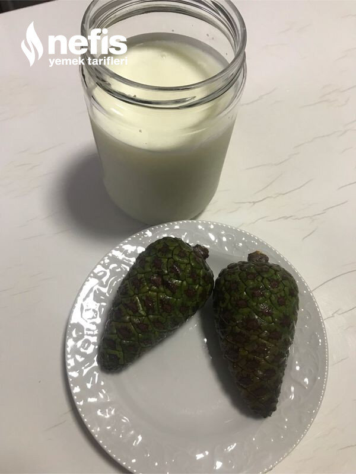

🍽️ 2-4 kişilik⏱️ Hazırlık: 5 dk🔥 Pişirme: 15 dk🏷️ Diğer Tarifler🏷️ Süt Ürünleri
Malzemeler
- Yarım lt süt
- 2 adet açılmamış çam kozalağı
Hazırlanışı
- Önce sütümüzü pişiriyoruz.
- Çam kozalaklarını yıkıyoruz.
- Süt küçük parmağımızı hafif yakacak kıvama gelince içine çam kozalaklarını koyuyoruz.
- Kavanozu ( ben ilk kavanozda mayaladım) sofra bezine sararak mayalamaya bırakıyoruz.( sıcak bir ortam, az ısıtılmış fırın veya kalorifer yanı olabilir).
- 6-7 saat sonra mayalanan yoğurdun kapağını açarak 24 saat kadar buzdolabında bekletiyoruz.